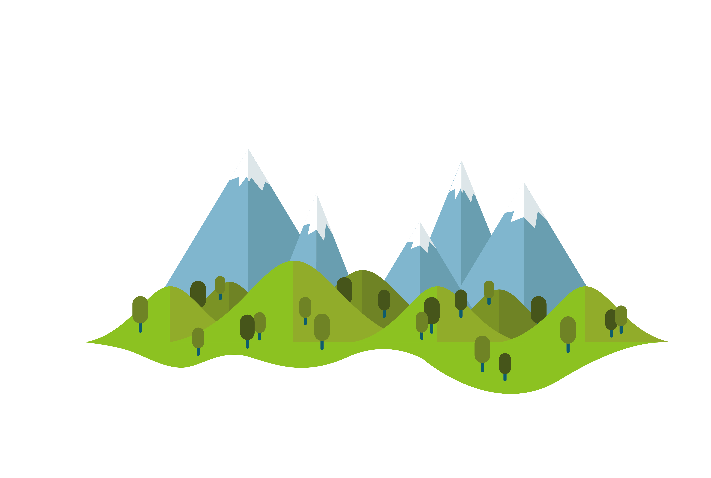
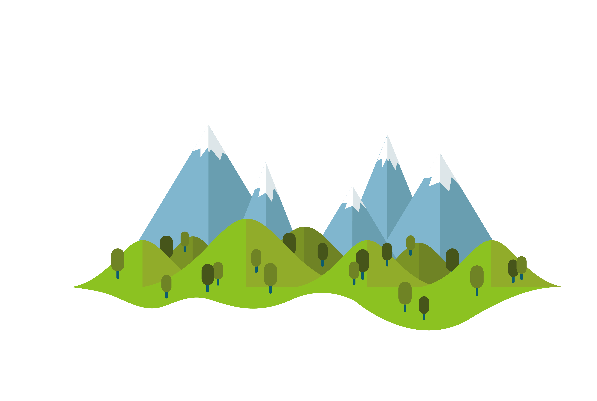

I'm Wasfa Parwez
Recent Graduate and Programmer.



As a recent graduate, I am passionate about problem solving and fascinated by the limitless potential of programming. With a hunger for knowledge and a desire to continuously learn and improve, I am excited to explore new technologies and apply my skills to tackle real-world challenges a skilled and effective developer.

I have experience in Python and web development, and I am proficient in programming and web development skills. I have worked with various Python modules and developed applications and programs. I have a good understanding of HTML and CSS and can use them to create attractive and functional web pages. I am also skilled in Flask, which allows me to create robust back-end functionality. I am always willing to learn and improve as a developer.

As a developer, I have leveraged a diverse set of tools and technologies to create an array of intellectually stimulating projects. My experience encompasses web scraping, API integration, GUI development, and object-oriented programming using Python. I have contributed to several notable projects, including an automated data entry system, a comprehensive stock market alert system, a user-friendly password manager, a challenging quiz, and several engaging games. Through these endeavors, I have honed my skills and expanded my knowledge, allowing me to tackle increasingly complex challenges and deliver innovative solutions.